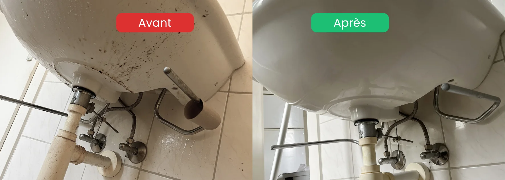

Chaque année en Suisse, des milliers de locataires voient leur caution partiellement ou totalement retenue après un état des lieux de sortie. Pourtant, dans la plupart des cas, ces retenues auraient pu être évitées avec une bonne préparation.
Voici la méthode que nous appliquons chez Malo Nettoyage — celle qui nous a permis de valider 58 états des lieux sur 58.
Étape 1 : Commencer 2 semaines avant le départ

Le plus grande erreur est de tout faire la veille. Nettoyer un appartement entier en une journée, c'est bâcler. Certains points — comme les joints moisis, les taches incrustées ou les trous de chevilles — nécessitent du temps de préparation.
2 semaines avant : déplacez tous les meubles et appareils pour voir l'état réel des sols et des murs. Identifiez les zones problématiques : joints noirs, moquette tachée, parquet rayé. Prenez des photos datées.
1 semaine avant : traitez ces zones. Rebouchez les trous, remplacez les joints si nécessaire, traitez les taches persistantes. Ne laissez rien au hasard.
Étape 2 : Nettoyer dans le bon ordre, pièce par pièce
La méthode professionnelle : toujours travailler du haut vers le bas et du fond vers la porte. Ce que vous faites tomber au sol en nettoyant le plafond ne resalira pas ce que vous avez déjà nettoyé.
Ordre recommandé par pièce :
- Plafond et angles (toiles d'araignée, moisissures)
- Murs et interrupteurs
- Fenêtres et radiateurs
- Meubles et placards (intérieur et extérieur)
- Sol en dernier (lavage final)
Pour la cuisine : hotte et four en premier car ce sont les plus longs. Pour la salle de bain : laissez le produit détartrant poser au moins 15 minutes avant de frotter.

Étape 3 : Le jour de l'état des lieux — attitude et documentation
Le nettoyage est fait. Mais le jour J, votre comportement compte aussi.
Ce qu'il faut faire :
- Arriver 15 minutes en avance pour une dernière vérification rapide
- Avoir votre ancien état des lieux d'entrée pour comparer point par point
- Signaler vous-même les petites imperfections avant que la régie ne les trouve — ça montre votre bonne foi
- Photographier chaque pièce après nettoyage pour garder une preuve datée
Ce qu'il faut éviter :
- Contester chaque remarque de la régie — restez calme et professionnel
- Signer un procès-verbal avec des réserves importantes sans les lire
- Oublier de récupérer toutes les clés, badges et télécommandes